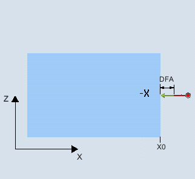
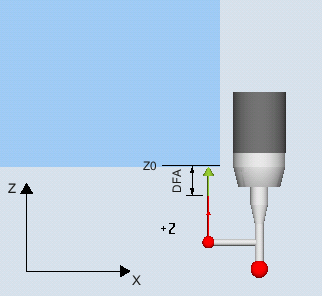

This measuring method determines the position of a paraxial edge in the workpiece coordinate system through 1-point measurement.
When using probes with side boom (L probe, type 713), towing measurement is possible in the positive direction of the tool axis.
With the "3D probe with spindle reversal" measuring method, measurement is performed in the axes of the plane as differential measurement. Two measurements are automatically carried out one after the other, one with a spindle position of 180 degrees, and one with 0 degrees. The special procedure for this measurement permits the use of an uncalibrated multi-directional probe. However, the correct tool radius of the probe must be determined once by calibrating the probe. Probe types 712, 713 and 714 are not suitable for this purpose. A positionable spindle is mandatory.
With the "Align 3D probe" measuring method, the switching direction of the probe is always aligned to the current measuring direction. This function is recommended when high demands are placed on the measuring accuracy. Probe types 712, 713 and 714 are not suitable for this purpose. A positionable spindle is mandatory.
The measurement result (measurement difference) can be used for the following:
Correction of a work offset
Offset of a tool
Measurement without offset
An extended tool offset in the replacement tools as well as additive and setup offsets are possible. Empirical values can generally be included in the calculations for tool offsets.
The measuring cycle determines the actual value of a measuring point, taking into account the calibration values at one edge of the workpiece referred to its zero point.
The difference between the actual value (measured value) and a specified setpoint in the parameterized measuring axis is calculated.
|  Measure: Edge (CYCLE978) |  Measure: Edge (CYCLE978) |
The probe must be active as tool.
Tool type of the probe:
3D multi probe (type 710)
Mono probe (type 712)
L probe (type 713)
| Note |
L probe application (type 713)Measurement in +Z (for towing measurement) is possible with the L probe. The basic alignment of the L probe boom is toward +X (offset angle = 0). If the probe boom is to be aligned in a different direction in the measuring program, this can performed through a rotation around the tool axis (e.g. ROT Z = 90). |
Star-type probe (type 714)
| Note |
The following measuring methods are only possible in the axes of the plane:
The probe types 712, 713 and 714 generally cannot be used for these measuring methods. |
When using the measuring version on lathes:
Use probe type 710 or 580
Set the length reference of the workpiece probe to the center of the probe ball:
MD51740 $MNS_MEA_FUNCTION_MASK, bit 1 = 0
| Note |
A SPOS-capable spindle is needed for the functions "3D probe with spindle reversal", "Align 3D probe", or for probe types 712, 713, and 714. |
The probe should be positioned at a distance that is somewhat greater than the measurement path (DFA) with respect to the surface to be measured.
After the measurement has been completed, the probe ball with its circumference is at a distance of the measuring path DFA with respect to the measuring surface.
See also:
Measure: Edge (CYCLE978)